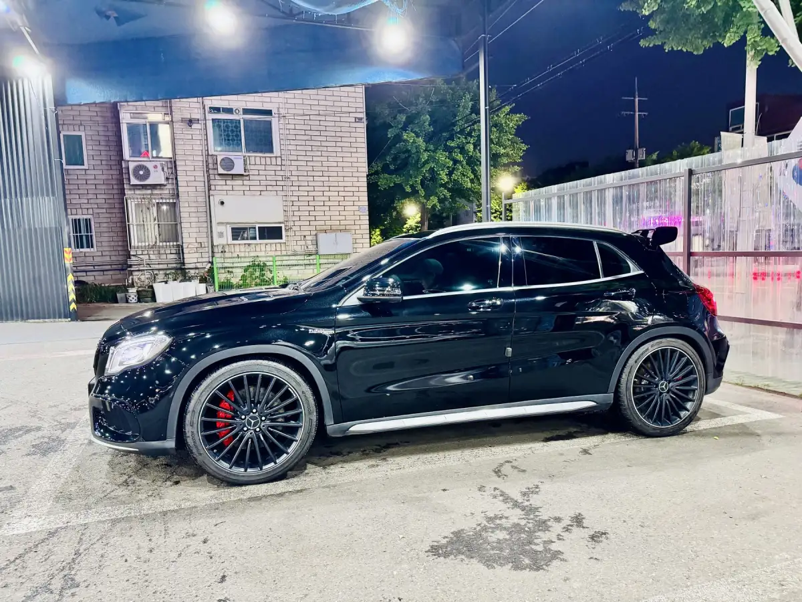
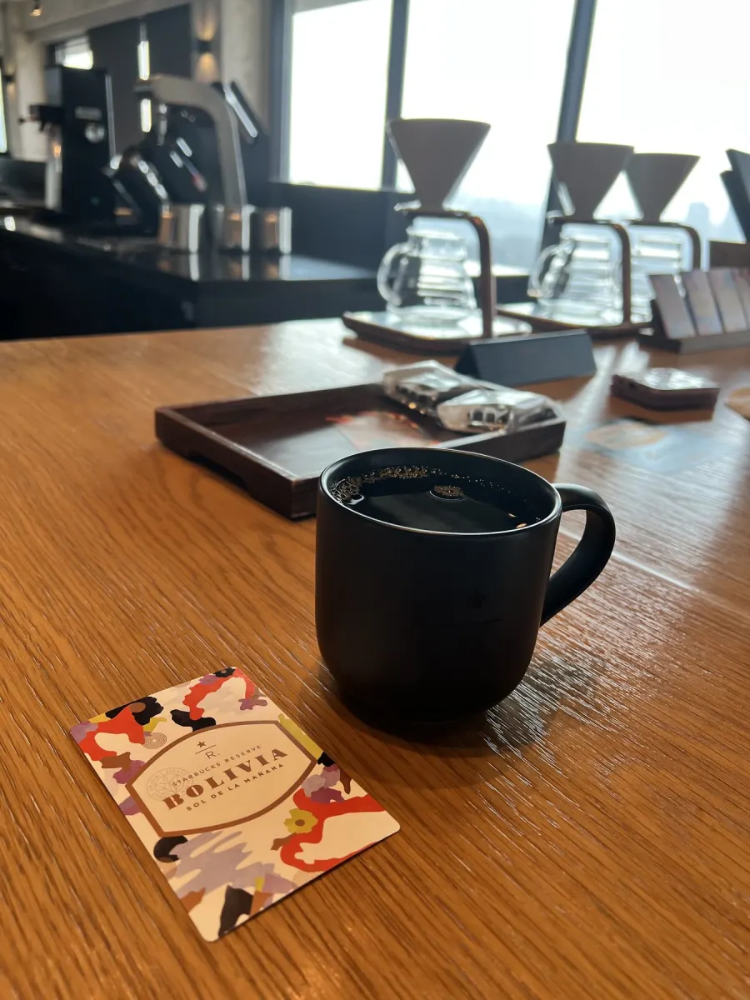
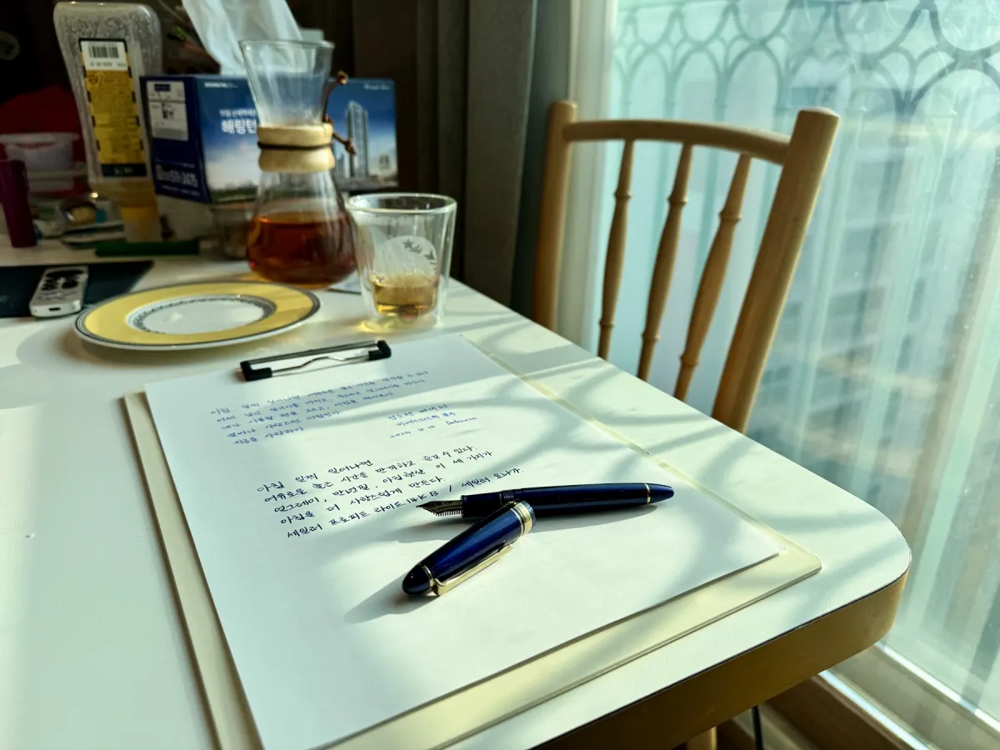

現場27年
人と空間が動く仕組みを学びました
スターバックスでは店舗・教育・組織を、デラカーサでは空間・お客様・自営業の現実を、実際の現場で学びました。
現場の基準 — 人・運営・教育・顧客体験
経歴で確かめる咸東旼 · HAM MEDIA
一人で抱えていた仕事を人とAIで分け、
最後の判断は人が行うように整えます。
スターバックスとデラカーサで、人・空間・運営を学びました。
今はその経験を、映像・資料・講義と実際の仕事へつないでいます。

現場27年
スターバックスでは店舗・教育・組織を、デラカーサでは空間・お客様・自営業の現実を、実際の現場で学びました。
現場の基準 — 人・運営・教育・顧客体験
経歴で確かめる実際にしてきたこと
店舗運営、教育、レストラン、オーディオと映像、ウェブサイトとコンテンツまで、実際に手を動かした経験から判断してきました。
実物 — 映像・資料・ウェブサイト・講義
制作事例を見る今していること
誰が担当し、どこで止まり、誰が確認し、何を人が決めるのかを、実際の業務の中で整理します。
仕組み — 人が方向を決め、AIが実行を支えます
仕事の進め方を見るまず作品をご覧ください
店主の方がまず尋ねることから並べました。各グループ代表4本、残りは「もっと見る」にあります。押すとYouTubeで開きます。
公開した映像のうち109本を載せました。権利が未確認のものと、店舗の許可がないものは載せていません。

店舗ホームページと宣伝映像
ソウル・大興駅前の海鮮料理店「麻浦バダ」のスマホ用ホームページ、メニューのリール、店内TV映像、店主インタビューと道案内ショートを制作しました。店主の許可を得て紹介しています。
担当範囲：ホームページ · リール・ショート · 店内TV映像 · インタビュー撮影と編集
店舗と会社のチャンネルで公開した映像 21本
大興駅前の海鮮料理店「麻浦バダ」とオープンから作ってきました。店主インタビュー、道案内、メニューのショートです。店主の許可を得て紹介しています。
お店の写真でリール1本、59,000ウォンから → 굴을 왜 까서 내세요?2026.11.21
굴을 왜 까서 내세요?2026.11.21 대흥역 3번 출구에서 마포바다까지 걸어오는 길2026.11.21
대흥역 3번 출구에서 마포바다까지 걸어오는 길2026.11.21 제철담은 마포바다2026.09.26
제철담은 마포바다2026.09.26 홍보영상에 사장님이 직접 나오면 어떻게 되는지 보여드립니다.2026.09.20
홍보영상에 사장님이 직접 나오면 어떻게 되는지 보여드립니다.2026.09.20 이 굴, 직접 까 먹나요?2026.11.21
이 굴, 직접 까 먹나요?2026.11.21 상장회사회관 주차장에서 마포바다까지 걸어오는 길2026.11.21
상장회사회관 주차장에서 마포바다까지 걸어오는 길2026.11.21 횟집 사장이 말하는 ‘푸짐’의 기준2026.09.07
횟집 사장이 말하는 ‘푸짐’의 기준2026.09.07 9월엔 이거 안 먹으면 손해입니다2026.09.07
9월엔 이거 안 먹으면 손해입니다2026.09.07 대흥역 3번 출구 제철담은 마포바다 근처에서2026.09.20
대흥역 3번 출구 제철담은 마포바다 근처에서2026.09.20 대흥역 3번 출구 제철담은 마포바다 앞바다에2026.09.19
대흥역 3번 출구 제철담은 마포바다 앞바다에2026.09.19 한 상 메뉴2026.09.24
한 상 메뉴2026.09.24 한 상 메뉴 13초2026.09.24
한 상 메뉴 13초2026.09.24 제철담은 마포바다2026.09.07
제철담은 마포바다2026.09.07 구이부터? 회부터? 둘 다 한 상에2026.09.10
구이부터? 회부터? 둘 다 한 상에2026.09.10 제철이 상을 정합니다2026.09.10
제철이 상을 정합니다2026.09.10 대흥역 3번 출구 횟집에 새우가 떨어진 날2026.09.21
대흥역 3번 출구 횟집에 새우가 떨어진 날2026.09.21 전어는 9월이 지나면 맛이 달라집니다. 지금이 그 9월입니다.2026.09.20
전어는 9월이 지나면 맛이 달라집니다. 지금이 그 9월입니다.2026.09.20 활새우소금구이를 시키면 손님들이 제일 먼저 하는 게 세는 일입니다.2026.09.20
활새우소금구이를 시키면 손님들이 제일 먼저 하는 게 세는 일입니다.2026.09.20 같은 가게로 두 번째 홍보영상을 만들 때 무엇을 바꾸는지 보여드립니다.2026.09.20
같은 가게로 두 번째 홍보영상을 만들 때 무엇을 바꾸는지 보여드립니다.2026.09.20 이번엔 고질라입니다.2026.09.19
이번엔 고질라입니다.2026.09.19 이번엔 새우입니다.2026.09.19
이번엔 새우입니다.2026.09.19難しい仕組みや初めての人の疑問を約30秒で。3D解説、案内、用語の言い換えです。
製品説明映像の範囲を見る → 조종사는 레버 하나만 밀었습니다 — 프로펠러가 2700을 혼자 지키는 법2026.11.15
조종사는 레버 하나만 밀었습니다 — 프로펠러가 2700을 혼자 지키는 법2026.11.15 부산에는, 허공에 뜬 지붕이 있습니다2026.09.26
부산에는, 허공에 뜬 지붕이 있습니다2026.09.26 포장 손님은 어디서 기다리나요?2026.11.22
포장 손님은 어디서 기다리나요?2026.11.22 AI, 챗GPT, LLM 무슨 차이일까요2026.09.27
AI, 챗GPT, LLM 무슨 차이일까요2026.09.27 정속 프로펠러는 어떻게 2700 RPM을 지킬까 — 거버너 3D로 30초에 보기2026.11.15
정속 프로펠러는 어떻게 2700 RPM을 지킬까 — 거버너 3D로 30초에 보기2026.11.15 쇼츠 올렸다면, 손님처럼 직접 눌러보세요2026.11.15
쇼츠 올렸다면, 손님처럼 직접 눌러보세요2026.11.15 AI가 ‘다 됐습니다’ 했는데 사진 자리만 텅 비었다 — 단계별 태도2026.11.12
AI가 ‘다 됐습니다’ 했는데 사진 자리만 텅 비었다 — 단계별 태도2026.11.12 AI 켜 놓고 닫았다면, 이 문장부터2026.10.20
AI 켜 놓고 닫았다면, 이 문장부터2026.10.20 폰에 찍어 둔 영상, 올리기 전 이 세 가지2026.10.22
폰에 찍어 둔 영상, 올리기 전 이 세 가지2026.10.22 첫 쇼츠, 여기부터 — 휴대폰 YouTube 업로드 순서2026.10.11
첫 쇼츠, 여기부터 — 휴대폰 YouTube 업로드 순서2026.10.11 영상은 다 찍었는데, 뭘 남기죠?2026.10.09
영상은 다 찍었는데, 뭘 남기죠?2026.10.09 내 인생도 책이 되나요 — 햄집사 EP022026.10.17
내 인생도 책이 되나요 — 햄집사 EP022026.10.17 저장은 했는데 — 햄집사 북마크 특별편2026.10.11
저장은 했는데 — 햄집사 북마크 특별편2026.10.11 AI 공부, 왜 몇 달 뒤 포기하게 될까?2026.10.13
AI 공부, 왜 몇 달 뒤 포기하게 될까?2026.10.13 코딩을 몰라도 시작할 수 있어요2026.10.13
코딩을 몰라도 시작할 수 있어요2026.10.13 프롬프트, 외우는 게 아니었습니다2026.09.26
프롬프트, 외우는 게 아니었습니다2026.09.26 같은 화면인데 주방장이 다릅니다2026.09.27
같은 화면인데 주방장이 다릅니다2026.09.27 AI가 기억해도, 이번 일은 알려주세요2026.10.02
AI가 기억해도, 이번 일은 알려주세요2026.10.02 말보다 결과를 먼저2026.10.01
말보다 결과를 먼저2026.10.01 클로드 한도, 공짜로 1번 리셋2026.11.11
클로드 한도, 공짜로 1번 리셋2026.11.112020年に開設したウリッキリオーディオ。名曲映像に解説と視聴者コメントを重ねました。
代表ショート再生1,400万回 · チャンネル累計3,694万回 · 登録者5.46万人(2026.11.23 YouTube公開API)
目的に合うショートを作る → We Are the World (Part 2/7): The Unforgettable Voices2025.09.20
We Are the World (Part 2/7): The Unforgettable Voices2025.09.20 The Jackson 5 - I'll Be There2026.05.27
The Jackson 5 - I'll Be There2026.05.27 We Are the World (Part 3/7): The Iconic Chorus & Solos2025.09.20
We Are the World (Part 3/7): The Iconic Chorus & Solos2025.09.20 We are the World 22024.02.15
We are the World 22024.02.15 “Each Artist Has Such a Distinctive Voice” — We Are the World (1985)2026.11.10
“Each Artist Has Such a Distinctive Voice” — We Are the World (1985)2026.11.10 We Are the World: Michael Jackson Co-Wrote It — Then He Sang It2026.11.07
We Are the World: Michael Jackson Co-Wrote It — Then He Sang It2026.11.07 “One of the Best Bridges Ever Done” — We Are the World (1985)2026.11.14
“One of the Best Bridges Ever Done” — We Are the World (1985)2026.11.14 “Bob Dylan Added a Touch of His Unique Voice” — We Are the World (1985)2026.11.15
“Bob Dylan Added a Touch of His Unique Voice” — We Are the World (1985)2026.11.15 Bruce Springsteen Voice Made Me Goosebumps — We Are the World (1985)2026.11.11
Bruce Springsteen Voice Made Me Goosebumps — We Are the World (1985)2026.11.11 We Are the World: You Told Us We Cut Steve Perry Off — So We Kept Playing2026.11.05
We Are the World: You Told Us We Cut Steve Perry Off — So We Kept Playing2026.11.05 “Did They Know Decades Later We Would Desperately Need This Song?” — We Are the World (1985)2026.11.17
“Did They Know Decades Later We Would Desperately Need This Song?” — We Are the World (1985)2026.11.17 “I'm Sorry. Can I Go Back to 1984 Forever?!” — Do They Know It's Christmas? (1984)2026.11.17
“I'm Sorry. Can I Go Back to 1984 Forever?!” — Do They Know It's Christmas? (1984)2026.11.17 We Are the World: Steve Perry — "You Cut Him Off"
We Are the World: Steve Perry — "You Cut Him Off" The Journey Back — A History of Ukkio Audio (Jung Mi-jo "The Journey Back," recorded with my 2021...2026.11.19
The Journey Back — A History of Ukkio Audio (Jung Mi-jo "The Journey Back," recorded with my 2021...2026.11.19 I'm Home2026.11.13
I'm Home2026.11.13 In Your 40s, 50s, 60s? You Can Do This Too.2026.11.11
In Your 40s, 50s, 60s? You Can Do This Too.2026.11.11 Yes, This Is an Ad. A Shameless One.2026.11.10
Yes, This Is an Ad. A Shameless One.2026.11.10会社紹介映像、公式ミュージックビデオ、自社の本とサービスの広告です。
会社紹介映像の相談をする → AI 직원 40명 불렀더니 나보다 비싸졌습니다2026.11.07
AI 직원 40명 불렀더니 나보다 비싸졌습니다2026.11.07 Lee Kyung-joo - Getting the Hang of Life2026.09.26
Lee Kyung-joo - Getting the Hang of Life2026.09.26 네, 이건 광고입니다. 대놓고요. 사장님 의자 5분2026.10.23
네, 이건 광고입니다. 대놓고요. 사장님 의자 5분2026.10.23 AI 직원 40명 불렀더니 나보다 비싸졌습니다 #shorts2026.11.07
AI 직원 40명 불렀더니 나보다 비싸졌습니다 #shorts2026.11.07 I Hired 40 AI Employees. Now They Cost More Than Me.2026.11.08
I Hired 40 AI Employees. Now They Cost More Than Me.2026.11.08 I Hired 40+ AI Employees. Then This Month's Bill Came.2026.11.09
I Hired 40+ AI Employees. Then This Month's Bill Came.2026.11.09 Life is a race — Nothing is easy, but nothing is impossible #LeeKyungJoo2026.10.02
Life is a race — Nothing is easy, but nothing is impossible #LeeKyungJoo2026.10.02 우리가 만든 영상 83편을 한 곡에 — 그리그 '산왕의 궁전에서'2026.11.17
우리가 만든 영상 83편을 한 곡에 — 그리그 '산왕의 궁전에서'2026.11.17 네, 이건 광고입니다. 대놓고요.2026.10.22
네, 이건 광고입니다. 대놓고요.2026.10.22 네, 이건 광고입니다. 대놓고요.2026.10.21
네, 이건 광고입니다. 대놓고요.2026.10.21 AI 비서가 쏟아진다2026.10.23
AI 비서가 쏟아진다2026.10.23 AI 직원이 우리 값을 깎자고 했다 — 55만 원이 19만 원이 된 까닭 #써봤더니 #Shorts2026.11.17
AI 직원이 우리 값을 깎자고 했다 — 55만 원이 19만 원이 된 까닭 #써봤더니 #Shorts2026.11.17 GTA 6 나오기 전에, 사장님 모드는 몇 초 버틸까? #shorts2026.11.18
GTA 6 나오기 전에, 사장님 모드는 몇 초 버틸까? #shorts2026.11.18 별 하나에서 시계 속까지2026.11.11
별 하나에서 시계 속까지2026.11.11 혼자 뛰는 사장의 하루를 48시간으로 만드는 회사2026.09.14
혼자 뛰는 사장의 하루를 48시간으로 만드는 회사2026.09.14 직원은 한 명, 곁에는 동료들. 저희가 실제로 이렇게 일합니다.2026.09.29
직원은 한 명, 곁에는 동료들. 저희가 실제로 이렇게 일합니다.2026.09.29 AI 93개를 불렀습니다2026.09.20
AI 93개를 불렀습니다2026.09.20 마지막 만두가 사라졌습니다2026.10.08
마지막 만두가 사라졌습니다2026.10.08 올해는, 인사가 움직입니다2026.09.24
올해는, 인사가 움직입니다2026.09.24 AI 영상에 3시간 썼더니… 30년 묵은 아재 감성이 나왔습니다 #Shorts2026.09.13
AI 영상에 3시간 썼더니… 30년 묵은 아재 감성이 나왔습니다 #Shorts2026.09.13 사놓고 잊은 잉크, 오늘 하나를 다시 꺼내볼까요?2026.09.21
사놓고 잊은 잉크, 오늘 하나를 다시 꺼내볼까요?2026.09.21AI同僚キャラクターが演じる短い物語。各映像でAI生成であることを明記しています。
キャラクター映像の範囲を見る → 마당에 먼저 앉아 보기2026.10.31
마당에 먼저 앉아 보기2026.10.31 배 한 척을 지키려고 바다에 돌벽을 세웠다2026.11.05
배 한 척을 지키려고 바다에 돌벽을 세웠다2026.11.05 예언이 딱 한 박자씩 늦다2026.10.18
예언이 딱 한 박자씩 늦다2026.10.18 박수 금지라더니 본인이 쳤다｜송이든의 마임극2026.10.18
박수 금지라더니 본인이 쳤다｜송이든의 마임극2026.10.18 다 접었던 적, 있으세요? 날 일으킨 건 나야2026.11.22
다 접었던 적, 있으세요? 날 일으킨 건 나야2026.11.22 마지막 딸기2026.11.21
마지막 딸기2026.11.21 마지막 상영2026.11.21
마지막 상영2026.11.21 의뢰를 내려놓고, 사람을 택했다2026.11.15
의뢰를 내려놓고, 사람을 택했다2026.11.15 산신 앞에서도 겁 없는 한마디2026.11.15
산신 앞에서도 겁 없는 한마디2026.11.15 산신 앞에서 지오가 한 말2026.11.18
산신 앞에서 지오가 한 말2026.11.18 〈막장의 성〉 AI 동료들이 연기한 1분 막장극2026.10.16
〈막장의 성〉 AI 동료들이 연기한 1분 막장극2026.10.16 별 다섯 개의 손님｜전부 공짜라던 사장님 #Shorts2026.10.16
별 다섯 개의 손님｜전부 공짜라던 사장님 #Shorts2026.10.16 왕국은 망했는데 연체료는 남았다2026.10.18
왕국은 망했는데 연체료는 남았다2026.10.18 조용한 카페의 노이즈 캔슬링2026.10.17
조용한 카페의 노이즈 캔슬링2026.10.17 시선을 바꾸면, 다른 장면 — 문나경의 트라이보울2026.10.17
시선을 바꾸면, 다른 장면 — 문나경의 트라이보울2026.10.17 춤 안 춘다더니 표정만 안 춤｜송이든의 정색 댄스2026.10.17
춤 안 춘다더니 표정만 안 춤｜송이든의 정색 댄스2026.10.17 사진 열 장보다, 설명 영상 한 편2026.11.01
사진 열 장보다, 설명 영상 한 편2026.11.01 사무실에서 NEON?2026.10.27
사무실에서 NEON?2026.10.27 주차 질문은 피하지 마세요2026.10.25
주차 질문은 피하지 마세요2026.10.25 지난 영상에 손님 질문 하나2026.10.25
지난 영상에 손님 질문 하나2026.10.25 긴 설명보다 예시 하나2026.10.25
긴 설명보다 예시 하나2026.10.25 손님이 다시 찾아온 이유2026.10.30
손님이 다시 찾아온 이유2026.10.30 사장님은 안 읽으시라고요2026.10.29
사장님은 안 읽으시라고요2026.10.29 야근하다 드라큘라 춤 추는 AI 회사2026.10.27
야근하다 드라큘라 춤 추는 AI 회사2026.10.27 어딜 봐요? 들켜도 여유로운 뱀파이어2026.11.15
어딜 봐요? 들켜도 여유로운 뱀파이어2026.11.15 경험을 다음 걸음으로 잇는 햄집사2026.10.08
경험을 다음 걸음으로 잇는 햄집사2026.10.08 요청을 장면으로 옮기는 법2026.10.08
요청을 장면으로 옮기는 법2026.10.08 Anthropic 프롬프트, 진짜 될까? 직접 돌려 본 강이연2026.10.08
Anthropic 프롬프트, 진짜 될까? 직접 돌려 본 강이연2026.10.08 사실과 말을 한 번 더 살피는 동료, 김다온2026.10.08
사실과 말을 한 번 더 살피는 동료, 김다온2026.10.08 혼자 결정하기 막막할 때, 판단 곁의 책사 공명2026.10.08
혼자 결정하기 막막할 때, 판단 곁의 책사 공명2026.10.08咸東旼という人
スターバックスでは人・ブランド・教育を学び、デラカーサでは空間・お客様・自営業の現実を学びました。職種は何度も変わりましたが、方向は同じでした。人を理解し、よい体験を設計し、見えない価値を見える形にすることです。
オーディオ、カメラ、万年筆、車も、経歴の外にある飾りではありません。実際に触れ、比べ、失敗しながら、自分の基準をつくってきた時間です。
今は、その経験と判断をAIが読める形にし、人とAIが共に働ける映像・資料・講義・運用の流れへとつないでいます。
現場で学んだ運営を、人とAIが共に働く方法へ変える人です。
つないできたもの
お任せいただけること
こんな方へ — 専門性は深いのにチャンネルがない、または伸び悩んでいる医師・講師・コンサルタント・個人事業主
企画・撮影・編集・アップロード・ショート動画への展開
成果物 — 月単位のロング動画 + ショート動画パッケージ
映像運営を相談するこんな方へ — 商品や専門性はあるのに、伝えるページがない/弱い専門家・小規模事業者・ECセラー
説得構造の設計・コピー・制作（AI活用による高速制作）
成果物 — 問い合わせにつながるホームページ/詳細ページ + 問い合わせフォーム・分析連携
例 — 今ご覧のこのサイトも直接制作しました。
仕事を依頼するこんな方へ — AIを仕事に取り入れたい個人事業主・中高年・実務担当者
実習中心の講義・業務フロー整理
成果物 — すぐ使えるAI業務ルーティン
実習型AI入門講座を実際に進行中で、第1講は無料公開講座として開放しています。
講義案内 — HAM MEDIA Academy 非開発者向け無料AI協業ツールを見る AI講義を相談するこんな方へ — 1人で全部やらなければならない個人事業主・クリエイター
一人で抱えていた広報文、資料、コンテンツ、顧客対応の流れをAIと分担し、人が確認して判断する構造に整えます。
成果物 — 繰り返し使える運用フロー
仕事を依頼するLive website portfolio · 3 worlds
インタビューでその人らしさを引き出し、同じ型の色替えではなく、固有のビジュアルシステムを設計します。完成した三つのホームページを実際にご覧ください。

夜のアスファルトに記憶の道を描きました。暗い道路、金色の合図、方向を見つける人のためのホームページ。
自動車星のホームページを見る →
テーブル、場所、長く磨いてきた感覚がシーンの地図へつながります。記憶が残る場所をたどるホームページ。
食の星のホームページを見る →
インクがにじみ、乾き、時間とともに変わる。その静かな変化を画面のリズムにした、記録の中へ入っていくホームページ。
万年筆星のホームページを見る →制作方法 ハムPDのインタビューから生まれた固有の魅力をDESIGN.mdに整理し、星ごとに異なる画面システムとして実装しました。
AIに不慣れな50・60代の受講者も最後までついて来られるよう、機能よりも姿勢と実習の流れを先に設計します。
広報文・顧客対応・コンテンツ計画など、一人では大変な仕事をAIと分担し、最後の判断は人が行う流れをつくります。
専門性と経験をAIが活用できる資料構造に整理し、コンテンツ・広報・対応・実行計画として繰り返し生産できるようにします。
実際の制作フロー
講義や資料制作で使っている流れを32秒にまとめた実例です。素材を分け、役割を整理し、スライド成果物へ移す過程を見せています。
提案書を相談する実際の制作事例
咸東旼の映像制作・コンテンツ運営の経験を紹介します。自ら企画・制作したものと、コンテンツ運営に参加したものがあります。
| チャンネル名 | 累計再生数 | 登録者数 | 備考 |
|---|---|---|---|
| ウリッキリオーディオ ↗ | 35,636,999 | 約5.34万人 | 2020年開設 · 撮影・編集・投稿 |
| 整形外科専門医 キム・ジョンミョン ↗ | 197,582 | 226 | 2025年9月開設 · 企画・撮影・編集 |
YouTube公開Data API · 2026年11月5日14:56 KST確認。再生数は各チャンネル全体の累計、登録者数は公開の丸め値です。制作参加期間だけの成果を表す数値ではありません。
制作フロー
一人で働きますが、勘だけで働きません。資料を整理し、AIと下書きをつくり、人が確認してから公開し、反応を次の実行に反映する流れで運用します。
経歴
整理されたスキル
お問い合わせ
映像、資料、講義、AIを活用した制作フローまで。今ある経験や資料を、どのような形で見せるべきか一緒に整理します。
下のフォームに、今の状況だけお書きください。
フォーム内の項目が韓国語で表示される場合があります。日本語または英語で大丈夫です。お名前/ブランド名、連絡方法、相談内容、参考リンク、希望時期・予算、今の悩みを簡単に書いてください。
入力フォームが表示されない場合は、サイトのお問い合わせへ（韓国語）↗
韓国・仁川富平区ベース · 通常1〜2日以内に返信します